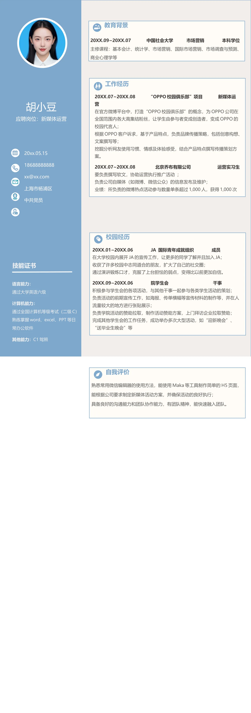

胡小豆
应聘岗位：新媒体运营
20xx.05.15
18688888888
xx@xx.com
上海市杨浦区
中共党员
20XX.07~20XX.08 “OPPO 校园俱乐部”项目 新媒体运
营
在官方微博平台中，打造“OPPO 校园俱乐部”的概念，为OPPO 公司在
全国范围内各大高集结粉丝，让学生由参与者变成创造者，变成OPPO 的
校园代言人；
根据OPPO 客户诉求，基于产品特点，负责品牌传播策略，包括创意构想、
文案撰写等；
挖掘分析网友使用习惯、情感及体验感受，结合产品特点撰写传播策划方
案。
20XX.07~20XX.08 北京乔布有限公司 运营实习生
要负责撰写软文，协助运营执行推广活动 ；
负责公司自媒体（如微博、微信公众）的信息发布及维护；
业绩：所负责的微博热点活动参与数量单条超过1,000 人，获得1,000 次
20XX.01~20XX.06 JA 国际青年成就组织 成员
在大学校园内展开JA 的宣传工作，让更多的同学了解并且加入JA；
收获了许多校园中志同道合的朋友，扩大了自己的社交圈；
通过演讲锻炼口才，克服了上台胆怯的弱点，变得比以前更加自信。
20XX.09~20XX.06 院学生会 干事
积极参与学生会的各项活动，与其他干事一起参与各类学生活动的策划；
负责活动的前期宣传工作，如海报、传单横幅等宣传材料的制作等，并在人
流量较大的地方进行张贴展示；
负责学院活动的赞助拉取，制作活动赞助方案，上门拜访企业拉取赞助；
完成其他学生会的工作任务，成功举办多次大型活动，如“迎新晚会”、
“送毕业生晚会”等
20XX.09~20XX.07 中国社会大学 市场营销 本科学位
主修课程：基本会计、统计学、市场营销、国际市场营销、市场调查与预测、
商业心理学等
语言能力：
通过大学英语六级
计算机能力：
通过全国计算机等级考试（二级C）
熟练掌握word、excel、PPT 等日
常办公软件
其他能力：
C1 驾照
技能证书
教育背景
工作经历
校园经历
熟悉常用微信编辑器的使用方法，能使用Maka 等工具制作简单的H5 页面，
能根据公司要求制定新媒体活动方案，并确保活动的良好执行；
具备良好的沟通能力和团队协作能力，有团队精神，能快速融入团队。
自我评价